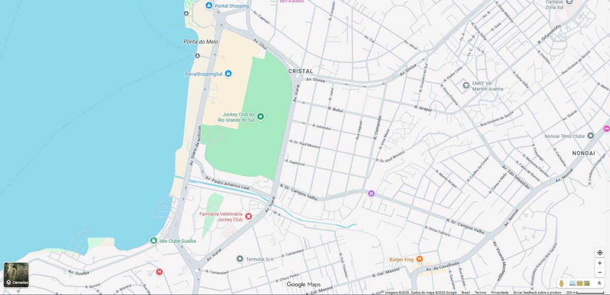

Contatos Meu Valor
Acesse agora e fale com os nossos especialistas. Preencha o formulário ao lado!
ATENÇÃO: o atendimento continuará exclusivamente via whatsapp.
Perguntas recorrentes:
Não. Você só paga se tiver valor a receber e quando receber.
Com certeza! Com a vml company, somamos mais de 15 anos de experiência e bilhões de valores recuperados. Não solicitamos dados sigilosos, realizamos tudo dentro da legalidade e com transparência.
Quem moveu ação trabalhista, foi parte em processos já encerrados, teve indenização ou depósito vinculado a um processo ou fechou acordo com depósito em conta.
Quanto a isso, não se preocupe! Uma vez assinado o contrato, lidaremos com todos os trâmites. Você só precisa aguardar o valor cair na sua conta!
Acesse imediatamente nossos canais oficiais e relate o ocorrido. Neste site e no perfil Recupera Meu Valor, no Instagram, você encontra os contatos corretos, atualizados e confiáveis para sanar as suas dúvidas.
